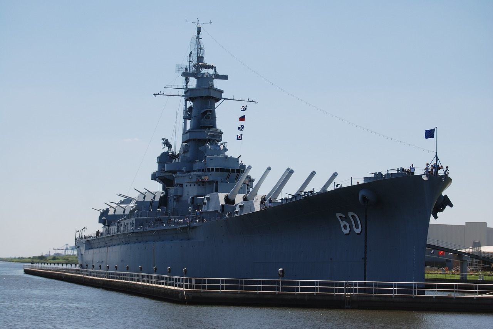
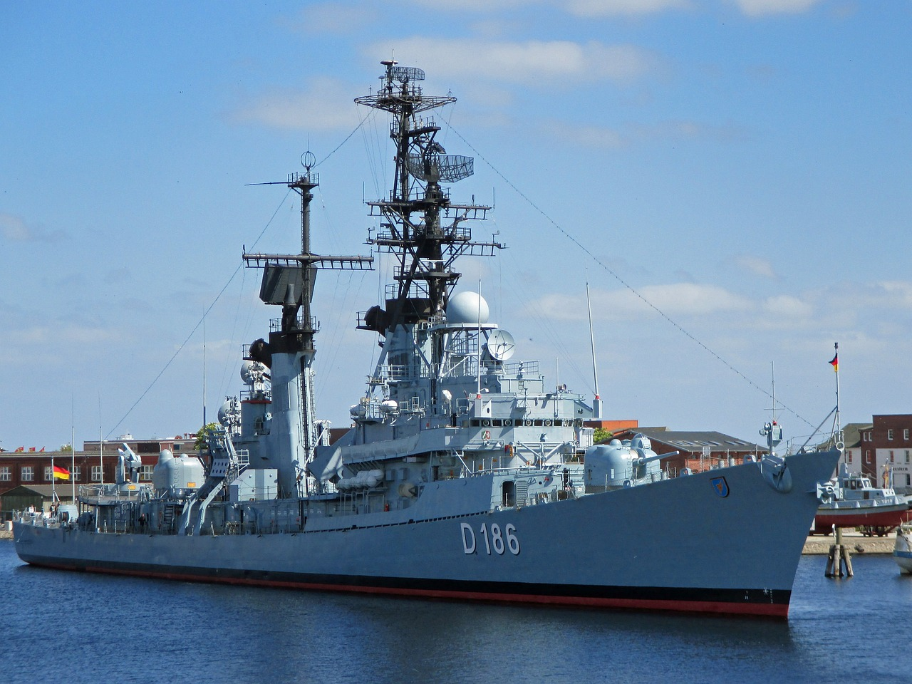

Header Logo
header link 1
header link 2
header link 3
This website is awesome
If you, your family or friends share an interest in Warships like we do, feel free to stick around and invite them!
Not interested in warships? That's ok! Have a look around and you just might discover a new passion!

Some Information

The Aircraft Carrier has been the dominant capital ships since World War 2. These ships allowed for naval combat to occur without visual contact.

The Battleship ruled the seas before the Aircraft Carrier. They were heavily armed and armoured. Some say they are due to make a comeback.

The Cruiser served as general-utility ships.From screening formations to scouting enemy fleets, no Navy was complete without them!

What the Destroyer lacks in armour and firepower, it definitely makes up for with speed and its sub-sea arsenal
"The best ambassador is a warship."
-Michelle J. Howard
It's time!
Sign up to lean more about warships by clicking that button right over there!